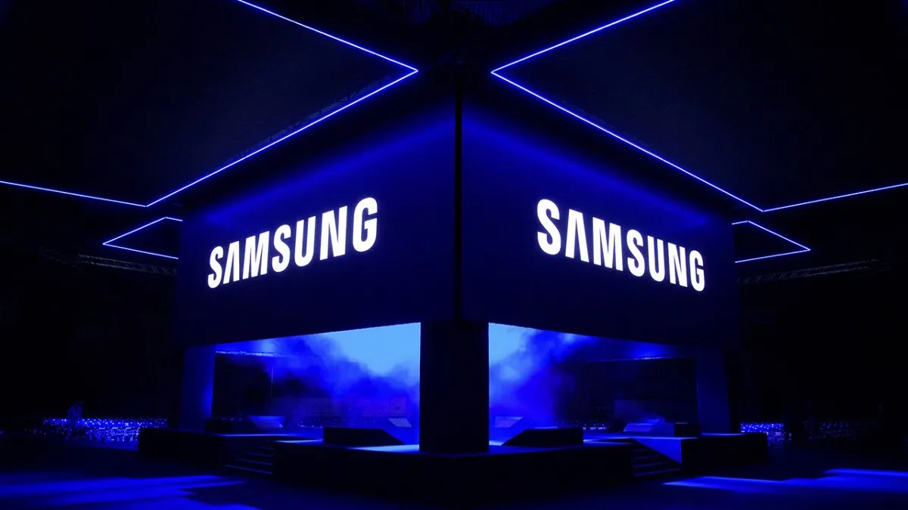

Fundação
Lee Byung-chul funda a Samsung em Daegu, Coreia, como uma pequena empresa de comércio de alimentos, tecidos e exportações locais.
Venha explorar a história da Samsung e mergulhar em uma trajetória marcada por inovação, ética e compromisso com valores sólidos. Descubra como a empresa transformou ideias em soluções que impactam o mundo e conheça a missão que guia cada passo de seu caminho.

Os valores da Samsung funcionam como a bússola moral e estratégica que orienta cada decisão e ação da empresa. Eles são o alicerce sobre o qual a missão é construída e garantem que a empresa atue com integridade, excelência e responsabilidade.
A Samsung tem uma missão clara: usar sua tecnologia e seus talentos para criar produtos e serviços de excelência que inspirem o mundo. O objetivo é enriquecer a vida das pessoas e contribuir para a prosperidade social, transformando ideias inovadoras em experiências que realmente fazem a diferença. É a filosofia de dedicar o melhor da empresa para construir um futuro melhor para a sociedade global.
A Samsung se baseia em cinco princípios de negócios, que servem como a base do seu Código de Conduta Global. Eles guiam a empresa em sua conformidade com padrões legais e éticos, além de definir suas responsabilidades sociais.
Lee Byung-chul funda a Samsung em Daegu, Coreia, como uma pequena empresa de comércio de alimentos, tecidos e exportações locais.
A Samsung expande para áreas como têxteis, seguros, mídia e alimentos, preparando o terreno para uma futura entrada em indústrias mais tecnológicas.
Criação da Samsung Electronics, marco que inicia a trajetória da empresa no setor de eletrônicos, com os primeiros televisores em preto e branco.
Produção de televisores, refrigeradores, máquinas de lavar e aparelhos de ar-condicionado. A Samsung também começa a investir em semicondutores.
A Samsung lança seus primeiros equipamentos de telecomunicações e expande a produção de semicondutores, consolidando-se como fornecedora de tecnologia.
Sob a liderança de Lee Kun-hee, a Samsung adota a “Visão Global” com foco em qualidade e inovação, preparando-se para competir com gigantes internacionais.
Apesar da crise asiática, a Samsung investe em semicondutores, chips de memória e eletrônicos de consumo, tornando-se uma das principais fornecedoras globais.
Lançamento de celulares, televisores LCD e telas de última geração. A Samsung se consolida como líder global em smartphones e tecnologia digital.
A linha Galaxy redefine o mercado mobile. A Samsung investe em displays AMOLED, chips avançados e se torna referência em inovação no setor tecnológico.
A Samsung fortalece sua liderança em 5G, inteligência artificial, Internet das coisas e sustentabilidade, guiada por valores éticos, inovação e impacto social.